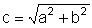

Nr 1b, p. 63
Es gilt:

Damit ergeben sich die folgenden Lösungen:
| a | 6 | 12 | 48 | √40 ≈ 6.32 | 32.5 | 10.5 | 1.4 | 16 | √10 |
| b | 8 | 9 | 14 | 3 | 36 | 36 | √0.29 ≈ 0.54 | 5 | √6 |
| c | 10 | 15 | 50 | 7 | 48.5 | 37.5 | 1.5 | √281 ≈ 16.76 | 4 |
Nr 8, p. 63
In einem Kreis mit Radius 5cm wird eine Sehne der Länge 7cm eingezeichnet. Gib ihren Abstand vom Kreismittelpunkt an.
Lösung: Der Abstand d des Mittelpunktes von der Sehne beträgt d = √(25 - 12.25) cm ≈ 3.57 cm.
Lösung Nr 14a, p. 64
Zeichnet man den Radius senkrecht zu den beiden parallelen Sehnen und die Radien zu den Sehnenendpunkten,
so entstehen rechtwinklige Dreiecke, aus denen sich x berechnen lässt:
x = (√(12.25 - 4.41) - √(12.25 - 10.5625) cm ≈ 1.50 cm.
Lösung Nr 14c, p. 65
Da ∠BCA = 60°, so misst
wegen dem rechtwinkligen Δ ECA der ∠AEB = 30°.
Da ∠CAB = 60°, so
∠BAE = 30°.
Δ AEB hat also gleiche Basiswinkel und ist daher gleichschenklig. Also ist EB = AB = 3 cm.
Δ CAE ist folglich ein halbes gleichseitiges Dreieck und daher misst AE = 3 · √3 cm .
Sei H der Fusspunkt der Höhe von A auf DE.
Da ∠BAE = 30° (s. oben), so ist
wegen dem rechtwinkligen Δ HAE der ∠AED = 60°. Also ist
Δ AED ebenfalls ein halbes gleichseitiges Dreieck. Deshalb gilt für seine Höhe AD:
AD = AE · √3 = 3 · √3 · √3 cm = 9 cm.
Folglich misst CD = 6 cm.
Nr 15, p. 65
Ein gleichschenkliges Trapez hat die Seitenlängen a=10cm, b=d=5cm und c=4cm. Wie lang sind seine Diagonalen?
Lösung: Ist F der Fusspunkt der Höhe durch die Ecke C, so ist FB = 3 cm,
also FC = √(25 - 9) cm = 4 cm.
Im rechtwinkligen Dreieck AFC ist nun AF = 3 cm und FC = 4 cm.
Daher misst die Diagonale AC = √65 cm ≈ 8.06 cm.